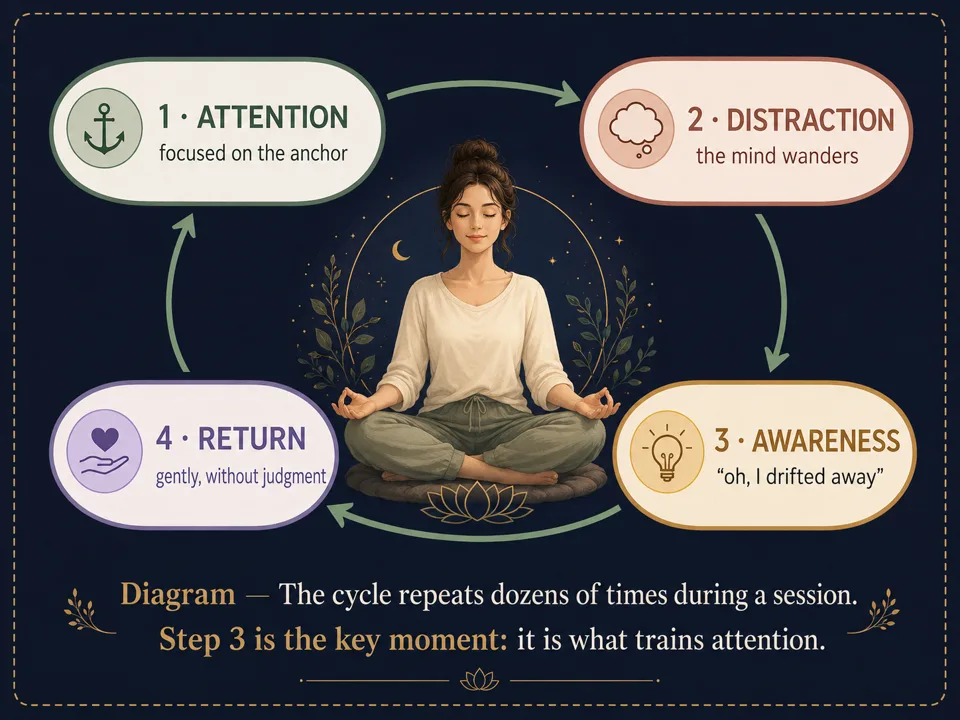

“I can’t stop thinking”: what to do in meditation
The attention cycle, 3 concrete tools for busy thoughts, and the 5 classic obstacles in meditation — plus the key moment that trains attention.
“I think too much to meditate” is the number-one beginner myth. Good news: noticing your mind has wandered isn't failure — it IS the exercise. Here's the attention cycle, three concrete tools for busy thoughts, and the five classic obstacles of meditation.
Working with thoughts
The attention cycle
Every meditation, whatever the technique, rests on the same 4-part cycle. Knowing it changes everything: you'll know that “losing yourself in thoughts” is part of the exercise, and is not a failure.

3 concrete tools for working with thoughts
🏷️ Noting (labeling)
When you notice a distraction, name it mentally with a neutral word — “thought,” “memory,” “plan,” “sound” — then return to the anchor. Naming creates immediate distance: you're no longer in the thought, you're watching it.
☁️ The sky metaphor
Your mind is the sky; thoughts are clouds passing through. You have neither to push them away nor to hold them — just let them cross. Some days the sky is heavy: the sky is still the sky.
🚉 The train platform
Thoughts are trains pulling into the station. Meditating isn't stopping trains from arriving — it's staying on the platform instead of boarding. And if you catch yourself on board, get off at the next stop, no drama.
When it's hard: the 5 classic obstacles
| Obstacle | What it looks like | Antidote |
|---|---|---|
| Restlessness | Urge to move, impatience, mind in overdrive | Lengthen exhales (4-6 or 4-7-8), count breaths from 1 to 10 |
| Drowsiness | Heavy eyelids, fog | Open eyes, straighten posture, meditate standing or walking |
| Doubt | “I'm doing it wrong,” “it's not working” | Remember the cycle: returning = succeeding. Shorten duration rather than quitting |
| Boredom | “Nothing is happening” | Fine curiosity: explore the micro-sensations of breath, like a scientist |
| Discomfort | Itches, tingling, tension | Observe the sensation for 3 breaths before moving — often it transforms. Otherwise, move mindfully |
Frequently asked questions
Is it normal to think nonstop while meditating?
Yes, completely. A mind that produces thoughts is a mind that works. Meditation doesn't aim at a blank mind: it trains the return of attention, dozens of times per session.
What exactly is mindfulness meditation?
Resting your attention on the present moment without judging what's there: the breath, the sounds, the passing thoughts. It's the foundation of most guided meditations for beginners.
What if I fall asleep while meditating?
Meditate with eyes half-open, seated rather than lying down, at another time than late evening. Drowsiness is one of the five classic obstacles — it fades with regularity.
Rather practice than read?
Everything in this article can be practiced in Awakening Minds, a free meditation app: 149 guided meditations — sleep, breathing, immersive worlds — no subscription, no ads, no account, and fully offline.
✦ Discover the free app